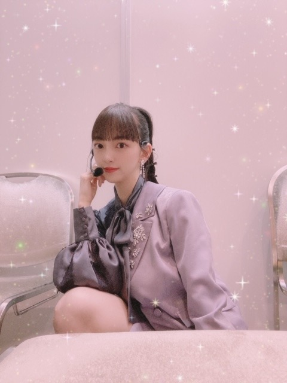
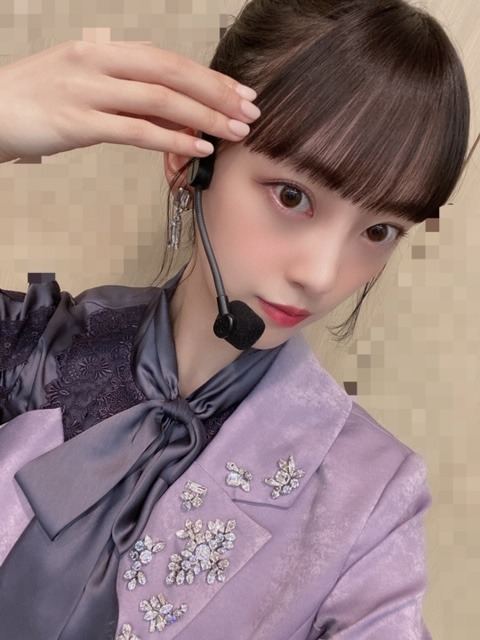

2020/0914Monぷっぷく
MUSIC DAY
観てくださったみなさん
ありがとうございました^ - ^
小室哲哉さんメドレーと
Route 246は新衣装でした
紫ジャケットがかわいくてお気に入り...♡
衣装にあわせて
ポニーテールのウィッグもつけてみました！
メイクさんありがとうございます！



そして
セーラー服を脱がさないで
もコラボで歌わせていただきました！
ドキドキしたけど
楽しかったです^ - ^
久しぶりのガールズルールも
披露できて、日奈子とやっぱりガルル
いい曲だねって話してました

食欲の秋すぎて
食欲とまらんです
また更新します！
あ、今日は19時から
TikTokライブ生配信にでます
みてね〜〜
未央奈
2020/09/14 12:48
コメント(272)
ブログ更新ありがとー
THEMUSICDAY最高でした！
ボブもポニーテールもすごい似合ってたよ
新衣装も素敵でした
これからも頑張ってください応援してます♥
THEMUSICDAY最高でした！
ボブもポニーテールもすごい似合ってたよ
新衣装も素敵でした
これからも頑張ってください応援してます♥
こんばんは。ブログ更新ありがとうございます。
MUSIC DAY見ましたよ～。こうやって並べてもらえると、小室さんのサウンドって独特ですよね。TKさんにしか作れないサウンド。あと懐メロを乃木坂46が踊ってくれるのは、とても嬉しいです。
きらきらとハートの写真加工、かっこいいですね。私は写真撮影は下手な方なので、写真きれいに撮れる人羨ましいです。
ではまた。
MUSIC DAY見ましたよ～。こうやって並べてもらえると、小室さんのサウンドって独特ですよね。TKさんにしか作れないサウンド。あと懐メロを乃木坂46が踊ってくれるのは、とても嬉しいです。
きらきらとハートの写真加工、かっこいいですね。私は写真撮影は下手な方なので、写真きれいに撮れる人羨ましいです。
ではまた。
未央奈ちゃん、こんばんは。
tiktokお疲れ様です。
流石というかプレゼンが上手過ぎます。
いつも分かりやすく的確なコメントするよね。
のぎののでは何も考えなく喋ってると
言っていたけど、頭の回転が速くTV・ラジオ
向きの特技として誇っていいと思います。
tiktokチャレンジでは3期楽曲の可愛いらしい
ダンスとても良かったです。
あっ！…そうだ‼︎
それで思い出した。君に贈る花がない
の振り入れ、そんな短時間でやってると
思わなかった。MVではそんな感じ微塵も
なかったよ。
乃木坂の振り入れっていつもそんな感じなの？
レッスンして家で復習してみたいな感じ
だと思ってた。大変なんだね。
あと、真夏さんとの漫才みたいなかけあいも
楽しかったです。仲良しならではだね。
今回のやつをみて乃木坂tiktokが新たな事を
やってくれそうな感じなんで楽しみです。
では、おやすみなさい。
PS: 特に書く事はありませんが手紙みたいに
なっていたのでそういう風にします。
まさより。
tiktokお疲れ様です。
流石というかプレゼンが上手過ぎます。
いつも分かりやすく的確なコメントするよね。
のぎののでは何も考えなく喋ってると
言っていたけど、頭の回転が速くTV・ラジオ
向きの特技として誇っていいと思います。
tiktokチャレンジでは3期楽曲の可愛いらしい
ダンスとても良かったです。
あっ！…そうだ‼︎
それで思い出した。君に贈る花がない
の振り入れ、そんな短時間でやってると
思わなかった。MVではそんな感じ微塵も
なかったよ。
乃木坂の振り入れっていつもそんな感じなの？
レッスンして家で復習してみたいな感じ
だと思ってた。大変なんだね。
あと、真夏さんとの漫才みたいなかけあいも
楽しかったです。仲良しならではだね。
今回のやつをみて乃木坂tiktokが新たな事を
やってくれそうな感じなんで楽しみです。
では、おやすみなさい。
PS: 特に書く事はありませんが手紙みたいに
なっていたのでそういう風にします。
まさより。
ブログ更新ありがとうございます(*^.^*)
ガールズルールすごく楽しかったです(((o(*ﾟ∀ﾟ*)o)))
今年はあまり出掛けることができませんでしたが、たくさんテレビで乃木坂を見て、いろんな夏曲を聞くことができました！こういう夏の感じ方もいいなぁて思いました(*･ω･*)
食欲の秋なので、美味しいものたくさん食べましょう
ガールズルールすごく楽しかったです(((o(*ﾟ∀ﾟ*)o)))
今年はあまり出掛けることができませんでしたが、たくさんテレビで乃木坂を見て、いろんな夏曲を聞くことができました！こういう夏の感じ方もいいなぁて思いました(*･ω･*)
食欲の秋なので、美味しいものたくさん食べましょう
TikTokライブ生配信見たよー。みんな可愛いかった。
おニャン子クラブは、秋元先生のアイドルプロデュースの原点ですもんね。
あれがなければ、AKB48も乃木坂46も欅坂46も日向坂46もなかったかも知れないです。
乃木ののも聴きましたよー！
未央奈ちゃんが出るのは、ほぼ1年ぶりだったんですねー！
未央奈ちゃんのラジオもレコメン！を卒業した後ゲストで出てから以来なので、楽しかったです♪
次はもっと早く出て欲しいなぁ☆
あれがなければ、AKB48も乃木坂46も欅坂46も日向坂46もなかったかも知れないです。
乃木ののも聴きましたよー！
未央奈ちゃんが出るのは、ほぼ1年ぶりだったんですねー！
未央奈ちゃんのラジオもレコメン！を卒業した後ゲストで出てから以来なので、楽しかったです♪
次はもっと早く出て欲しいなぁ☆
みおな、こんばんは！更新ありがとう。 近況報告ありがとうございます。 では、毎日みおなに良いこと沢山ありますように！ おやすみおな！！
未央奈ちゃん、'THE MUSIC DAY'は
'セーラー服を脱がさないで'と'ガールズルール'
のとき観れた！！
いつもながら綺麗でおじゃるよ
ポニーテールのフィックでも充分美人だよ
地毛だったら更に美人だと思うよ
'THE MUSIC DAY'とても楽しめた！！
'セーラー服を脱がさないで'と'ガールズルール'
のとき観れた！！
いつもながら綺麗でおじゃるよ
ポニーテールのフィックでも充分美人だよ
地毛だったら更に美人だと思うよ
'THE MUSIC DAY'とても楽しめた！！
こんばんみおなちゃん♪ヽ(´▽｀)/飯☺️だよ 飯☺️・・・・
ブログの更新ありがとう☺︎
ホントに食欲の秋だね〜！
小腹空いてきた〜（笑）
今後のブログも楽しみに待ってます！
体調には気をつけてね！
応援してます！
大好きです♡
TikTok配信観させて頂きました！
めっちゃ楽しみました〜！！
ありがとうね！！
ホントに食欲の秋だね〜！
小腹空いてきた〜（笑）
今後のブログも楽しみに待ってます！
体調には気をつけてね！
応援してます！
大好きです♡
TikTok配信観させて頂きました！
めっちゃ楽しみました〜！！
ありがとうね！！
こんばんは♪
MUSIC DAY感動しましたー！！
Route246格好良かったですし、
ポニテ&新衣装姿で圧巻でした✴
コラボ歌は可愛い姿が見られたし、
ガルルもとっても楽しかったです✨
バカリさんトークも面白かったし、
様々な姿が見れて嬉しかったです☆
食欲の秋もとっても素敵ですよね！
みおちゃんの魅力も止まらんです✌
今日の生配信もチェックしますね♡☺
MUSIC DAY感動しましたー！！
Route246格好良かったですし、
ポニテ&新衣装姿で圧巻でした✴
コラボ歌は可愛い姿が見られたし、
ガルルもとっても楽しかったです✨
バカリさんトークも面白かったし、
様々な姿が見れて嬉しかったです☆
食欲の秋もとっても素敵ですよね！
みおちゃんの魅力も止まらんです✌
今日の生配信もチェックしますね♡☺
未央奈ちゃんブログ更新ありがとうー！！
THE MUSIC DAY、もちろん見たよ〜♡♡
ボブもポニーテールも可愛すぎて、気絶しかけた…！
ウィッグだったんだね
ガールズルールも、小室哲哉メドレーも、セーラー服を脱がさないでも、ぜーーーんぶ良かった！！
録画もばっちりしたから、何回も見てるよ〜♡♡
またコメントするねっ！！
(*￣▽￣)ﾉ~~ ﾏﾀﾈｰ♪
わかより^^*
THE MUSIC DAY、もちろん見たよ〜♡♡
ボブもポニーテールも可愛すぎて、気絶しかけた…！
ウィッグだったんだね
ガールズルールも、小室哲哉メドレーも、セーラー服を脱がさないでも、ぜーーーんぶ良かった！！
録画もばっちりしたから、何回も見てるよ〜♡♡
またコメントするねっ！！
(*￣▽￣)ﾉ~~ ﾏﾀﾈｰ♪
わかより^^*
未央奈～！！
昨日の乃木中、前半のMVのところでも、未央奈が取り上げられてたね！
みなみんが紹介してたよね！
未央奈確かに表情の切り替えすごい☺️
注目してまたMV観てみるね♪
未央奈の新衣装の写真、ほんとに癒しだなぁ～❤️
髪型変わったインパクトも凄かったんだよね！
本当に好き～！！
back number私も好き！
あいみょんは分からなかった～(´･ω･`; )
またコメントするね～！
昨日の乃木中、前半のMVのところでも、未央奈が取り上げられてたね！
みなみんが紹介してたよね！
未央奈確かに表情の切り替えすごい☺️
注目してまたMV観てみるね♪
未央奈の新衣装の写真、ほんとに癒しだなぁ～❤️
髪型変わったインパクトも凄かったんだよね！
本当に好き～！！
back number私も好き！
あいみょんは分からなかった～(´･ω･`; )
またコメントするね～！
未央奈ブログ更新ありがとう〜！！可愛いすごく衣装似合ってるよ。
明日生徒会の演説があるんです…緊張しちゃう( ᵒ̴̶̷̥́︿ᵒ̴̶̷̣̥̀ )
未央奈ちゃんは緊張してる時どうやって緊張ほぐしますか？ぜひ教えてください
これからもずっとずっと大好きです！！
未央奈ちゃんは緊張してる時どうやって緊張ほぐしますか？ぜひ教えてください
これからもずっとずっと大好きです！！
未央奈ブログ更新ありがとー！
今日寒かったよね笑
あ、名前を｢sgwr_Masato｣にしていたんだけど
覚えてもらえにくいかな？って思って名前変えました。笑
今後ともコメントさせていただきます
昨日のMUSICDAYお疲れ様ー！
｢セーラー服を脱がさないで｣と「ガールズルール」の時ショートで
小室哲哉さんメドレーの時髪長くなってて本当に驚いた笑笑
ショートもロングも可愛すぎたたたた
食欲の秋ですねー Ｑ.未央奈は秋と言ったら何を食べますか？
自分は栗ご飯とか食べたい！
またブログ更新まってまーす
だいすこ
今日寒かったよね笑
あ、名前を｢sgwr_Masato｣にしていたんだけど
覚えてもらえにくいかな？って思って名前変えました。笑
今後ともコメントさせていただきます
昨日のMUSICDAYお疲れ様ー！
｢セーラー服を脱がさないで｣と「ガールズルール」の時ショートで
小室哲哉さんメドレーの時髪長くなってて本当に驚いた笑笑
ショートもロングも可愛すぎたたたた
食欲の秋ですねー Ｑ.未央奈は秋と言ったら何を食べますか？
自分は栗ご飯とか食べたい！
またブログ更新まってまーす
だいすこ
更新ありがとう❤
乃木坂工事中見ました。
未央奈ちゃん出てて嬉しかったです。
ミュージックデイ見れてないけど写真で衣装見れてありがとうございます。
かわいい～
未央奈ちゃん大好きです❤
乃木坂工事中見ました。
未央奈ちゃん出てて嬉しかったです。
ミュージックデイ見れてないけど写真で衣装見れてありがとうございます。
かわいい～
未央奈ちゃん大好きです❤
見たよ！
ポニ･･･お～
ってか、キラキラしてる！！
昔の先生楽曲ですね（笑）
Σ（・□・；）
秋って食欲もあるんだった！
何回も来そうだな～（笑）
よし！油断せず行こう！
ってか、キラキラしてる！！
昔の先生楽曲ですね（笑）
Σ（・□・；）
秋って食欲もあるんだった！
何回も来そうだな～（笑）
よし！油断せず行こう！
更新ありがとう
一日で2パターンの髪型見えて嬉しかったよー
一日で2パターンの髪型見えて嬉しかったよー
MUSICDAY見ました。
Route246の衣装めっちゃかっこよかったです。
これからも応援してます。
Route246の衣装めっちゃかっこよかったです。
これからも応援してます。
MUSIC DAY見ました！
衣装がかわいかった！
衣装がかわいかった！
未央奈ちゃんしか勝たん！！
ブログ更新ありがと〜‼︎
ミュージックデイ、すっっごい良かった‼︎
セーラー服を脱がさないでとガルルの時はショートだったけどルートの時はポニーテールで…‼︎
どっちとも可愛すぎて選べないぐらいほんっとうに可愛かった♡
未央奈ちゃんはいつも色んなメイクとか髪型をしてくれて同じ女の子としてすごい参考にさせてもらってます‼︎
ミュージックデイ、すっっごい良かった‼︎
セーラー服を脱がさないでとガルルの時はショートだったけどルートの時はポニーテールで…‼︎
どっちとも可愛すぎて選べないぐらいほんっとうに可愛かった♡
未央奈ちゃんはいつも色んなメイクとか髪型をしてくれて同じ女の子としてすごい参考にさせてもらってます‼︎
髪が伸びてたので、エクステかな？と思ったらウイッグでしたか！握手会が再開出来たら、ウイッグ被って行きます(^^)/
みおな
今日もお疲れ様です
ミュージックデイお疲れ様でした
1回目はまいやんもいてガルルでテンション上がりました
2回目は突然get wildから始まったからびっくりしました笑
最後にROUTE 246の流れまでスムーズで、よかったです
ROUTE 246の最初の前奏が終わる時（30秒目くらい）の、テテテ テテテテンから頭サビに入る所がカッコよくて好きです
久保ちゃんみたいに細かいけど、今回の曲はカッコよくてハマってます
ポニーテール可愛いです（ウィッグって言わないと気付かないね笑）
また更新してね
ありがとうございました
今日もお疲れ様です
ミュージックデイお疲れ様でした
1回目はまいやんもいてガルルでテンション上がりました
2回目は突然get wildから始まったからびっくりしました笑
最後にROUTE 246の流れまでスムーズで、よかったです
ROUTE 246の最初の前奏が終わる時（30秒目くらい）の、テテテ テテテテンから頭サビに入る所がカッコよくて好きです
久保ちゃんみたいに細かいけど、今回の曲はカッコよくてハマってます
ポニーテール可愛いです（ウィッグって言わないと気付かないね笑）
また更新してね
ありがとうございました
ブログ更新ありがとう
music dayの新衣装
可愛×格好いでした。
ウィッグすぐわかったよ。
毎日更新大変だけど
嬉しい
でも
あんまり無理しなくて
大丈夫だよ
music dayの新衣装
可愛×格好いでした。
ウィッグすぐわかったよ。
毎日更新大変だけど
嬉しい
でも
あんまり無理しなくて
大丈夫だよ
ポニーテールすっごい似合ってるよ！
未央奈さん、ブログ更新ありがとう。どこにでもいるおっさんです。
乃木中でさ、笑顔からの真顔について話題が出てたけど、あれ、自分は気がついてたよ。「未央奈がまたやってる」と思ってた。実は未央奈さんが正解だったんだね。
未央奈さんの目が、眼が、瞳が、好きです。
大きな「め」から溢れ出る力は、乃木坂46を羽ばたかせる強さをもち、メンバーを護るやさしさに溢れてる。それは、「覚悟」を決めた人間にしか出せないオーラです。
久しぶりに生写真見返してたら、2期生スペシャルの6種コンがあって、「かわいい」と改めて思ったよ。まだ子どものあどけなさが残ってて。
どんどん完成に近づいていく今現在は、「美しい」だね。
なにも、「女神」とは、まいやんの専売特許ではないと思うんだ。
ハルジオンではまいまいから。そして今度はまいやんから、大きな意志を受け継ぐのは、未央奈しかいない。
と、自分は思ってる。
ではでは
ひでき
乃木中でさ、笑顔からの真顔について話題が出てたけど、あれ、自分は気がついてたよ。「未央奈がまたやってる」と思ってた。実は未央奈さんが正解だったんだね。
未央奈さんの目が、眼が、瞳が、好きです。
大きな「め」から溢れ出る力は、乃木坂46を羽ばたかせる強さをもち、メンバーを護るやさしさに溢れてる。それは、「覚悟」を決めた人間にしか出せないオーラです。
久しぶりに生写真見返してたら、2期生スペシャルの6種コンがあって、「かわいい」と改めて思ったよ。まだ子どものあどけなさが残ってて。
どんどん完成に近づいていく今現在は、「美しい」だね。
なにも、「女神」とは、まいやんの専売特許ではないと思うんだ。
ハルジオンではまいまいから。そして今度はまいやんから、大きな意志を受け継ぐのは、未央奈しかいない。
と、自分は思ってる。
ではでは
ひでき
こんばんはお疲れさま☺
MUSIC DAY
乃木坂の活躍のところ見れんくてごめんな。
ファン失格やね(笑)ハハハ
見たかったけどな。
巨人の試合も見たかった。
堀ちゃん、とにかくごめんね。
ではではまたね。
体調気をつけてくださいね。
ほなね、堀ちゃん✨
MUSIC DAY
乃木坂の活躍のところ見れんくてごめんな。
ファン失格やね(笑)ハハハ
見たかったけどな。
巨人の試合も見たかった。
堀ちゃん、とにかくごめんね。
ではではまたね。
体調気をつけてくださいね。
ほなね、堀ちゃん✨
未央奈ちゃんこんばんは☺️
お洒落な衣装！
好きだよ
秋も美味しいものがたくさんだね♪
明日もHAPPYを
お休みなさい(^-^ゞ
お洒落な衣装！
好きだよ
秋も美味しいものがたくさんだね♪
明日もHAPPYを
お休みなさい(^-^ゞ
モバメ登録しました。
今日、誕生日でした。
ぷっぷく？
一丈夫聖剣
今日、誕生日でした。
ぷっぷく？
一丈夫聖剣
ミュージックデイ見たよ〜
堀ちゃんのポニーテールもボブも最高に可愛かったです！
食欲の秋だね〜
早く、堀ちゃんに会いたいよー！
み〜おな、大好き！
堀ちゃんのポニーテールもボブも最高に可愛かったです！
食欲の秋だね〜
早く、堀ちゃんに会いたいよー！
み〜おな、大好き！
よいおしゃしんですね＾＾
最高！
いや見てる俺もリアルにドキドキしてた笑
最近の乃木中を観ていて、
改めて思うけど…
やっぱり未央奈は、
可愛くて、
面白くて、
推しがいがあるね！！
これからも、
推し続けるから、
くれぐれも、
身体に気をつけて頑張って下さいね。
あんまり、
ダイエットとかして、
体調壊さないようにね。
十分、スタイル良いし、
可愛いんだからね。
改めて思うけど…
やっぱり未央奈は、
可愛くて、
面白くて、
推しがいがあるね！！
これからも、
推し続けるから、
くれぐれも、
身体に気をつけて頑張って下さいね。
あんまり、
ダイエットとかして、
体調壊さないようにね。
十分、スタイル良いし、
可愛いんだからね。
可愛すぎ
あいたいよ！！
あいたいよ！！
ブログ更新ありがとう。
MUSIC DAY見ました。『セーラー服を脱がさないで』は、ちょっと歌詞か過激でしたね(^_^;)
Route 246の新衣装シックな感じで素敵だと思います。
ポニーテールの未央奈さんもカワイイよ(^^)d 大好き
秋の食べ物と言えば自分的には秋刀魚ですかね。
ではでは＼(^-^)／
MUSIC DAY見ました。『セーラー服を脱がさないで』は、ちょっと歌詞か過激でしたね(^_^;)
Route 246の新衣装シックな感じで素敵だと思います。
ポニーテールの未央奈さんもカワイイよ(^^)d 大好き
秋の食べ物と言えば自分的には秋刀魚ですかね。
ではでは＼(^-^)／
こんにちは‼︎
ブログ更新、ありがとうございます♪
昨日のTHE MUSIC DAY、とっても良かったです…‼︎
ギアを1つ上げて臨んだ感じでしたね(笑)。
1つ前のブログにもコメントしたんだけど、途中で髪型を変えるあたりのファンサービスは、とっても未央奈らしいなと思いました♪
おかげさまで、いろんな未央奈を見ることができて楽しかったです…‼︎
新衣装も可愛いですよね♪
戦闘服的な印象のオリジナルの衣装と比べて、ちょっとフォーマルな感じ。
小室さんが大流行した時代をなんとなく彷彿とさせます♪
そうそう、乃木中も観ましたよ‼︎
『しあわせの保護色』のMV、なるほどなあと思いました。
あれは、説明がないと分からないかもしれませんね♪
未央奈は、スイッチのオンとオフの切り替えが見事ですよね…‼︎
『メンバーが言っていそうな一言』でも、セリフを言う直前、スイッチが入った感じがすごいなあと思いました♪
ああいう時の未央奈は、女優さんって感じがします‼︎
さて、9月も中旬に差し掛かって、だいぶ涼しくなってきましたね〜
秋はおいしいものがいっぱい。
思わず食べ過ぎちゃいますよね(笑)。
でも、最近のブログの写真を見てみると、未央奈若干シャープになったような。
少しぐらい食べすぎてもOKだと思います‼︎
ではでは、また。
明日も未央奈にとっていい1日になりますように♪
ブログ更新、ありがとうございます♪
昨日のTHE MUSIC DAY、とっても良かったです…‼︎
ギアを1つ上げて臨んだ感じでしたね(笑)。
1つ前のブログにもコメントしたんだけど、途中で髪型を変えるあたりのファンサービスは、とっても未央奈らしいなと思いました♪
おかげさまで、いろんな未央奈を見ることができて楽しかったです…‼︎
新衣装も可愛いですよね♪
戦闘服的な印象のオリジナルの衣装と比べて、ちょっとフォーマルな感じ。
小室さんが大流行した時代をなんとなく彷彿とさせます♪
そうそう、乃木中も観ましたよ‼︎
『しあわせの保護色』のMV、なるほどなあと思いました。
あれは、説明がないと分からないかもしれませんね♪
未央奈は、スイッチのオンとオフの切り替えが見事ですよね…‼︎
『メンバーが言っていそうな一言』でも、セリフを言う直前、スイッチが入った感じがすごいなあと思いました♪
ああいう時の未央奈は、女優さんって感じがします‼︎
さて、9月も中旬に差し掛かって、だいぶ涼しくなってきましたね〜
秋はおいしいものがいっぱい。
思わず食べ過ぎちゃいますよね(笑)。
でも、最近のブログの写真を見てみると、未央奈若干シャープになったような。
少しぐらい食べすぎてもOKだと思います‼︎
ではでは、また。
明日も未央奈にとっていい1日になりますように♪
未央奈～ こんにちは
「MUSIC DAY」、おつかれさまでした。もちろん見ましたよ。「セーラー服を～」なんて、まさに３０年以上も前の曲、懐かしいというか、ホント思い出しました。それにしてもこの曲を作ったのが秋元さんだなんて、ホントすごいめぐり合わせですね。
もちろん「乃木中」ももちろん見ましたよ。
そして今夜の「TicTok」のライブ配信おつかれさまでした。サンエトのエピソードありがとうございます。私の心の中では、サンエトは永遠です。「ゆっくりと咲く花」、私も一番気に入りました。３月の幻の二期生ライブを思い出しました。そして葉月と踊ってくれてた３期生曲、「Tik Tok」の特性を活かした新企画ありがとうございます。
「食欲の秋」が止まらない？ 気持ちはわかりますが、さすがにダメですよ。くれぐれも気をつけてくださいね。
「MUSIC DAY」、おつかれさまでした。もちろん見ましたよ。「セーラー服を～」なんて、まさに３０年以上も前の曲、懐かしいというか、ホント思い出しました。それにしてもこの曲を作ったのが秋元さんだなんて、ホントすごいめぐり合わせですね。
もちろん「乃木中」ももちろん見ましたよ。
そして今夜の「TicTok」のライブ配信おつかれさまでした。サンエトのエピソードありがとうございます。私の心の中では、サンエトは永遠です。「ゆっくりと咲く花」、私も一番気に入りました。３月の幻の二期生ライブを思い出しました。そして葉月と踊ってくれてた３期生曲、「Tik Tok」の特性を活かした新企画ありがとうございます。
「食欲の秋」が止まらない？ 気持ちはわかりますが、さすがにダメですよ。くれぐれも気をつけてくださいね。
未央奈ちゃん、おはよう。
MUSIC DAY良かったよ。
乃木中の未央奈ちゃんもよく笑っててかわいかったな。
MUSIC DAY良かったよ。
乃木中の未央奈ちゃんもよく笑っててかわいかったな。
堀さん、こんばんは。
紫ジャケットとてもお似合いです。かわいさもカッコよさも有る衣装だからポニーテールも凛々しく見えます。
あと向井さんとのtiktokとっても可愛かったです。振りをすぐ覚えられるのって凄い能力ですね。堀さんの動画のアイデア楽しみにしてます。
それと乃木坂工事中も見ました。しあわせの保護色の表情は指示が有ってのことだったんですね。てっきり普段どおりの堀さんが出てるんだと思ってました。普段どおりと言えば、「陰で言ってそう」の”ギア”は普段というか雑誌のインタビューとかで言ってそうですね。グループ背負ってるから気合い入れてます的なプラスの意味で、むしろガンガン言ってった方がいいと思います。
そういえばＭＶのうらみどころの時の髪型は何だかエプロンが似合いそうですね。
では、堀さんが秋を食べ尽くせるように応援してます。ブログ更新してくれてありがとうございます。
紫ジャケットとてもお似合いです。かわいさもカッコよさも有る衣装だからポニーテールも凛々しく見えます。
あと向井さんとのtiktokとっても可愛かったです。振りをすぐ覚えられるのって凄い能力ですね。堀さんの動画のアイデア楽しみにしてます。
それと乃木坂工事中も見ました。しあわせの保護色の表情は指示が有ってのことだったんですね。てっきり普段どおりの堀さんが出てるんだと思ってました。普段どおりと言えば、「陰で言ってそう」の”ギア”は普段というか雑誌のインタビューとかで言ってそうですね。グループ背負ってるから気合い入れてます的なプラスの意味で、むしろガンガン言ってった方がいいと思います。
そういえばＭＶのうらみどころの時の髪型は何だかエプロンが似合いそうですね。
では、堀さんが秋を食べ尽くせるように応援してます。ブログ更新してくれてありがとうございます。
ウィッグ自然に見えて良いね(*^^*)
未央奈のポニーテールすっごく好き。
これで前髪が眉毛が完全に出てるくらい短かったらなぁ。
未央奈ぁ、前髪どうする？
ギリギリじゃなくて、前髪と眉毛にはっきりスペースがある感じが好みだよ。
これで前髪が眉毛が完全に出てるくらい短かったらなぁ。
未央奈ぁ、前髪どうする？
ギリギリじゃなくて、前髪と眉毛にはっきりスペースがある感じが好みだよ。
ポニテ、衣装の雰囲気とも似合ってる！
みおなのセンス、やっぱり好きやなぁー
みおなのセンス、やっぱり好きやなぁー
みおなちゃん、大好きです
みおな〜！！！
ブログ見たよ〜！
ブログの更新頻度が高くて、
めっちゃ見るっ！
めちゃ写真見ちゃうし
いつも美肌でキレイだなー！
って思ってるん
つまり、楽しく見させてもらってます、
みおなのメイクとか
みおなの自撮りのポーズ、
いつもバリエーションあって
どうやって考えてんだろう、
て思っちゃったりもして
みおなってステキな人だって思うよ
the Music Day おつかれさま！！！
まいやんのガルル
小室メドレー見たよ！
セーラ服聞いた！！！
コラボ良かったよ！
新衣装でかわいい衣装！！！
短い時間があっという間ね！！！
そして
小室哲也さんといえば、
今回復帰して、秋元康さんとタッグを組み
新曲！
Route246だよね！！
聞けるかわかんなかったけど
ラスト、聞けた！
新衣装がRoute246の紫と
マッチして、小室メドレーとは違い
カッコよさ、爽やかさがあって
乃木坂に新たな風が吹いた！！気がしました！
みおな、
これからも笑いも一緒に届けてね！
じゃあね、
アビちゃん
より
ブログ見たよ〜！
ブログの更新頻度が高くて、
めっちゃ見るっ！
めちゃ写真見ちゃうし
いつも美肌でキレイだなー！
って思ってるん
つまり、楽しく見させてもらってます、
みおなのメイクとか
みおなの自撮りのポーズ、
いつもバリエーションあって
どうやって考えてんだろう、
て思っちゃったりもして
みおなってステキな人だって思うよ
the Music Day おつかれさま！！！
まいやんのガルル
小室メドレー見たよ！
セーラ服聞いた！！！
コラボ良かったよ！
新衣装でかわいい衣装！！！
短い時間があっという間ね！！！
そして
小室哲也さんといえば、
今回復帰して、秋元康さんとタッグを組み
新曲！
Route246だよね！！
聞けるかわかんなかったけど
ラスト、聞けた！
新衣装がRoute246の紫と
マッチして、小室メドレーとは違い
カッコよさ、爽やかさがあって
乃木坂に新たな風が吹いた！！気がしました！
みおな、
これからも笑いも一緒に届けてね！
じゃあね、
アビちゃん
より
堀さん、おはようございます。
改めて土曜日は『MUSIC DAY』出演、お疲れさまでした。
日村さんピアノの十八番（おはこ）『Get Wild』を始め、小室サウンドメドレーは、もっといろいろな小室さんの曲を歌う乃木坂46を観てみたい聴いてみたいと思いました。『Route 246』の新衣装もすてきでした。
『ガールズルール』はおそらく『MUSIC DAY』での白石さんラストパフォーマンス。やっぱりこの夏曲は盛り上がりますね。そして渡辺さん新田さんとのコラボ。この歌も秋元先生が作詞されていて。アイドルの歴史を感じました。
日一日と涼しくなってきて、食欲も旺盛になりますね。美味しく、そして節度よく秋の味覚を召し上がれ。
ではまたコメントします。
さらばだ、また会おう！（気球に乗って去りぬ〜）
改めて土曜日は『MUSIC DAY』出演、お疲れさまでした。
日村さんピアノの十八番（おはこ）『Get Wild』を始め、小室サウンドメドレーは、もっといろいろな小室さんの曲を歌う乃木坂46を観てみたい聴いてみたいと思いました。『Route 246』の新衣装もすてきでした。
『ガールズルール』はおそらく『MUSIC DAY』での白石さんラストパフォーマンス。やっぱりこの夏曲は盛り上がりますね。そして渡辺さん新田さんとのコラボ。この歌も秋元先生が作詞されていて。アイドルの歴史を感じました。
日一日と涼しくなってきて、食欲も旺盛になりますね。美味しく、そして節度よく秋の味覚を召し上がれ。
ではまたコメントします。
さらばだ、また会おう！（気球に乗って去りぬ〜）


さくらちゃんとあやめちゃんとでんちゃんと同じ愛知県出身の愛知の覇王です！
蓮加ちゃんと同じ高校2年生です！
THE MUSIC DAY見ました！
未央奈ちゃんがボブからロングポニーテール？になっていて、びっくりしました！
メイクさんにポニーテールのウィッグつけてもらってたんですね！
初めて知りました！
Route246の新衣装、めっちゃ似合っていて、可愛いですよ！
これからもずっと応援するので、頑張ってください！